Canário da Terra
 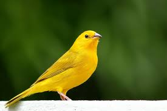
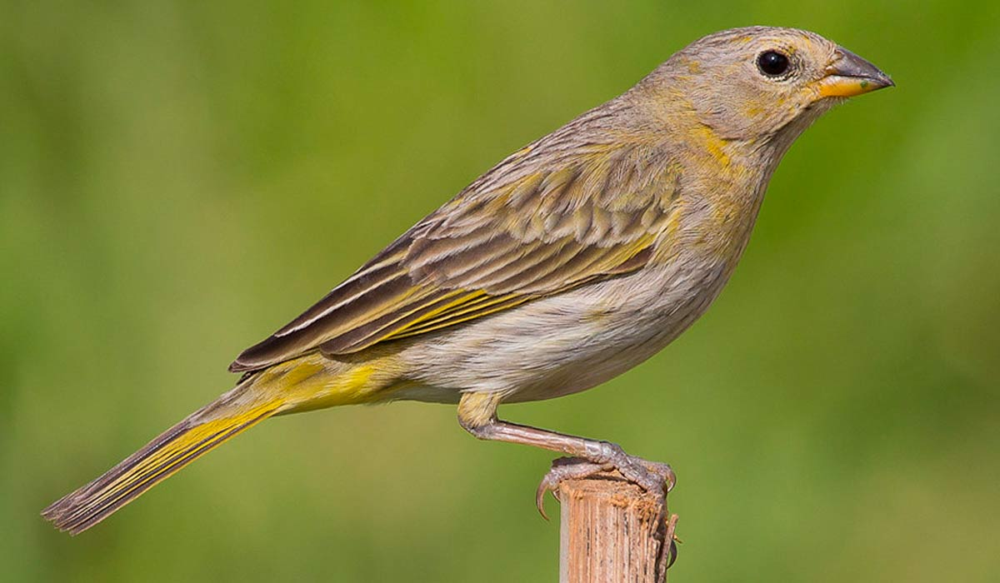
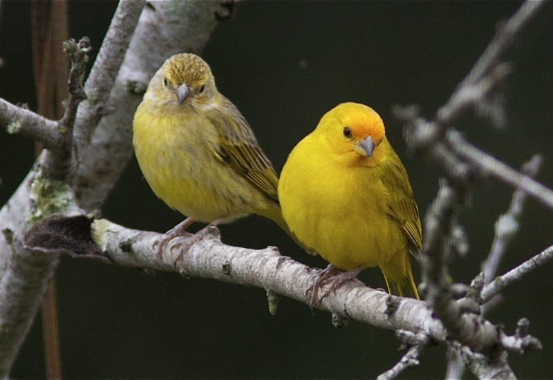
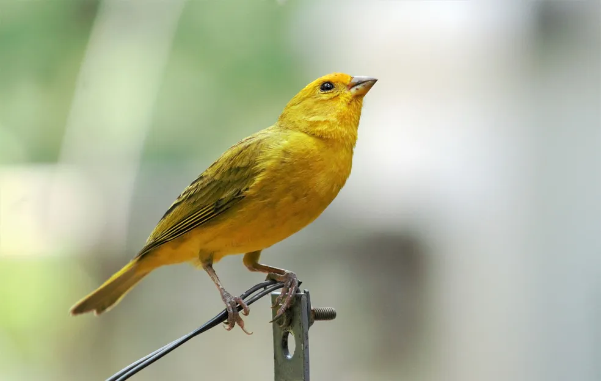
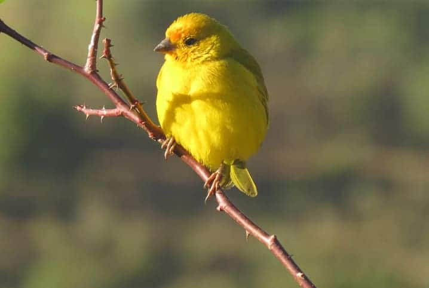
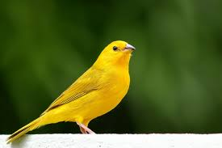
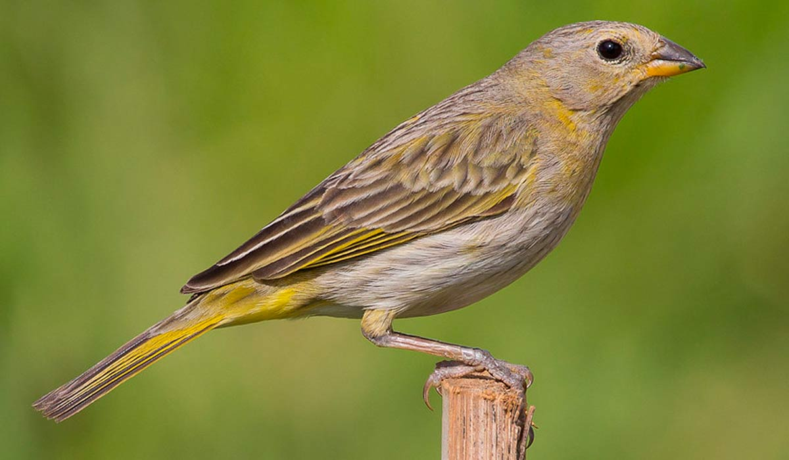
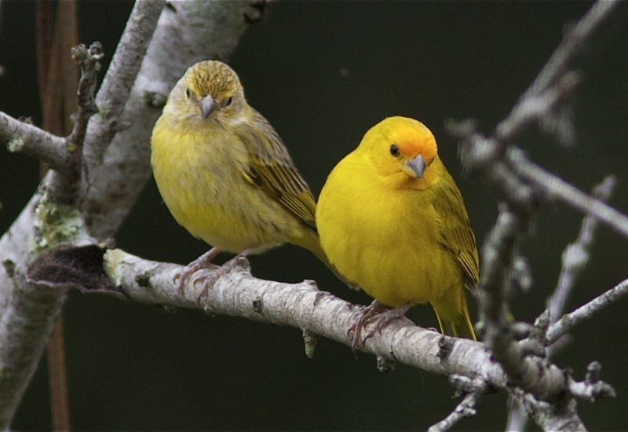
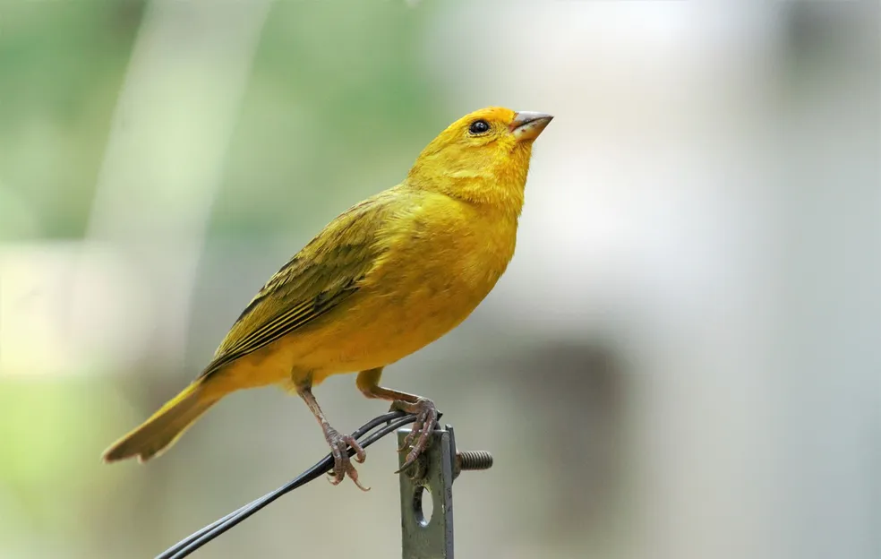
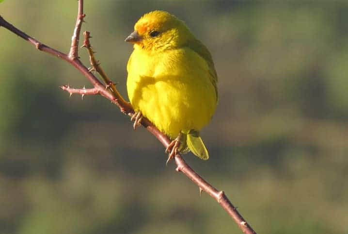
INFORMAÇÕES SOBRE O ANIMAL
- Nome Científico: Sicalis flaveola
(Linnaeus, 1766) - Nomes Populares: Canário-da-horta, canário-da-telha, canário-do-chão.
- Atualmente a espécie não corre risco de extinção.
Classificação Biológica
- Dominio: Eukaryota
- Reino: Animalia
- Filo: Chordata
- Classe Aves
- Ordem: Passeriformes
- Família: Thraupidae
- Espécie: S. flaveola
Nutrição Geral e Hábitos Alimentares
- Tipo de Nutrição: Heterotrófico
- Alimentação do Canário da Terra
- Sementes: Os canários-da-terra são principalmente granívoros, o que significa que sua dieta é baseada em grãos. Eles comem uma variedade de sementes, especialmente sementes de feno (grama). Além disso, a alimentação do canário-da-terra deve ser baseada na mistura de diversas sementes, como painço e alpiste. Outros grãos como perila, aveia, cártamo e cânhamo também podem ser utilizados na alimentação.
- Insetos: Além de sementes, os canários-da-terra também se alimentam de insetos. Isso fornece a eles uma fonte importante de proteína animal.
- Complementos: Para complementar a dieta, pode-se oferecer papa de ovos e farinhada com insetos. É importante notar que o formato do bico do canário-da-terra é eficiente em esmagar e seccionar as sementes, sendo, portanto, considerado predador e não dispersor de sementes. Além disso, eles tendem a vagar pelo chão em busca de sementes e insetos.
Coloração e Morfologia Básica:
- Morfologia Básica
- Tamanho médio: O canário-da-terra adulto mede aproximadamente 13,5 cm.
- Peso médio: A ave pesa em média 20 gramas.
- Bico: O bico tem uma parte superior cor de chifre e a parte inferior é amarelada.
- Pernas: As pernas são de cor rosada.
- Coloração e Aspectos relacionados a camuflagem
- Corpo: A coloração do corpo é amarelo-oliva com listras enegrecidas no dorso e próximo às pernas. As asas e a cauda são cinza-oliva.
- Femeas e Jovens: A parte superior do corpo é verde-oliva nas fêmeas e nos jovens, com penas acinzentadas.
- Machos Adultos: Com cerca de 18 meses de idade, os machos adquirem a plumagem amarela característica, principalmente na cabeça com tons avermelhados.
- Fêmeas Adultas: As fêmeas adultas possuem uma tonalidade amarelada de cinza.
- Essas características de coloração podem ajudar o canário-da-terra a se camuflar em seu ambiente natural, especialmente em áreas de vegetação densa ou campos secos.
Comportamento Geral e Sobrevivência
- Comportamento Geral: Os canários-da-terra são aves ativas e ágeis, passando a maior parte do tempo buscando alimento.
Eles são sociáveis e costumam viver em bandos quando não estão no período de acasalamento.
Os machos são conhecidos por seu canto vigoroso, que é usado para marcar território e atrair fêmeas. - Estratégias de Caça: Como são principalmente granívoros, os canários-da-terra tendem a vagar pelo chão em busca de sementes.
Eles também se alimentam de insetos, o que fornece uma fonte importante de proteína anima. - Estratégia de Defesa: Os canários-da-terra são territoriais e defendem seu território emitindo vocalizações de advertência.
Eles podem mostrar comportamento agressivo se necessário, especialmente na hora de defender o ninho ou de disputar uma fêmea com outro macho. - Estratégias de Sobrevivência: Essas aves são adaptáveis e podem viver em uma variedade de ambientes, incluindo campos secos, áreas de agricultura, caatinga, bordas de matas, áreas de cerrado, campos naturais, pastagens abandonadas, plantações e jardins gramados.
Durante a reprodução, a fêmea põe cerca de três a quatro ovos, que passam por um período de 15 dias no choco.
Eles também são conhecidos por tomar conta de ninhos abandonados de outras espécies.
Em boas condições de higiene e com alimentação de qualidade e água limpa, o canário-da-terra tem capacidade para viver por cerca de 12 anos. - Principal Predador da espécie: Quanto aos predadores, um dos principais predadores do canário-da-terra é o gavião-bombachinha-grande (Accipiter bicolor). Além disso, devido ao seu canto agradável, o canário-da-terra é frequentemente capturado para ser mantido como ave de cativeiro, o que representa uma ameaça significativa para a espécie.
Distribuição no Território Nacional
- Biomas de ocorrência no Brasil: O Canário-da-terra pode ser encontrado em vários biomas brasileiros.
- Sendo eles: Mata Atlântica, Caatinga, Cerrado, Pampa e Pantanal.
- Distribuição no território Nacional: O Canário-da-terra é encontrado em praticamente todo o território brasileiro, com exceção da região amazônica. Ele é comum em áreas rurais e urbanas, sendo frequentemente observado em jardins, pomares e parques. No entanto, é importante notar que, embora tenha alta taxa de natalidade, está extinto em certas regiões onde outrora era abundante. Isso se deve principalmente à caça altamente predatória movida pela cobiça provocada pelo seu canto forte e marcante.
- Mapa de Ocorrência 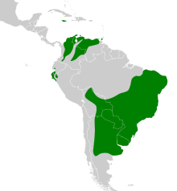
Aspectos Reprodutivos
- Época de Reprodução: Geralmente, a época de reprodução ocorre de junho a dezembro, quando as condições ambientais são favoráveis.
- Ninhos: O Canário-da-terra constrói ninhos fechados em formato de cestinha ou pode colocar seus ovos em telhados protegidos.
- Periodo de Incubação: O período de incubação é de cerca de 15 dias.
- Postura: A postura é de cerca de 4 ovos. Em cada período de criação, os bons reprodutores chegam a criar, em domesticidade, cerca de 8 filhotes, em média.
- Ciclo de Reprodução: A abertura da grade ocorre quando o casal inicia a troca de comida e, após seis a oito dias, são depositados de três a quatro ovos consecutivamente.
- Alimentação: A dieta balanceada é essencial para o bem-estar e sucesso reprodutivo dos passeriformes, sendo necessário que em cativeiro os pássaros sejam alimentados basicamente com sementes e frutas.
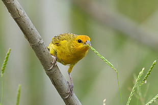
Canario da Terra se Alimentando.